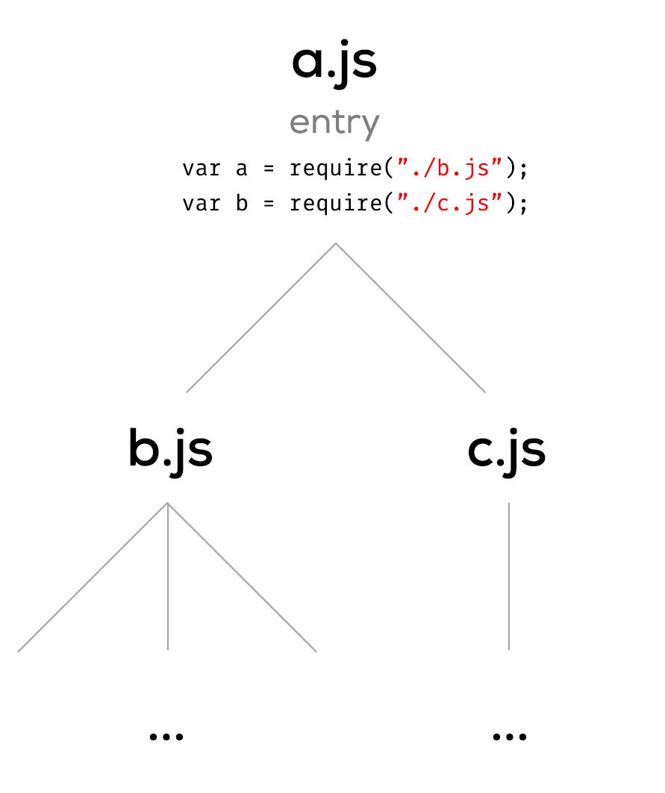
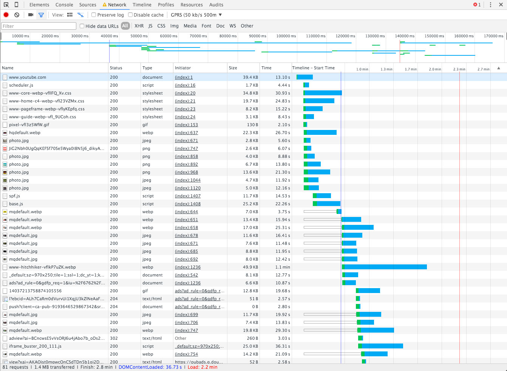
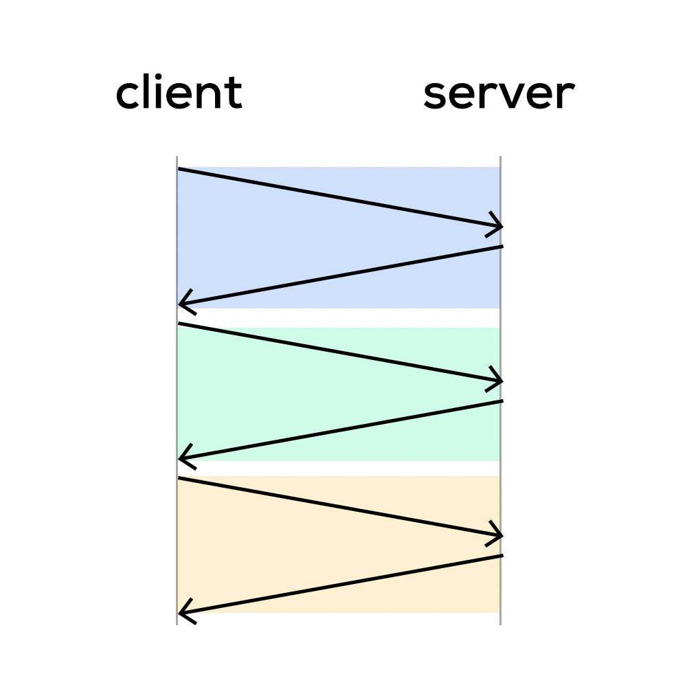
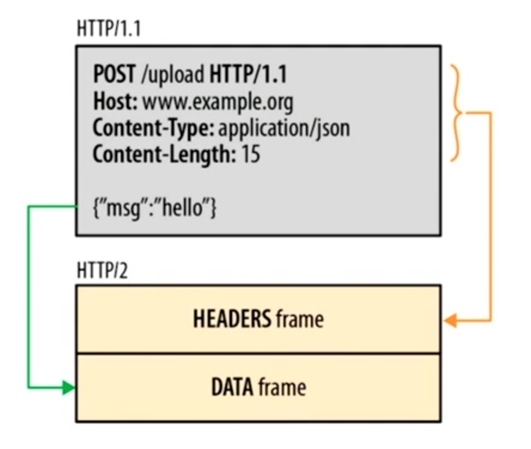
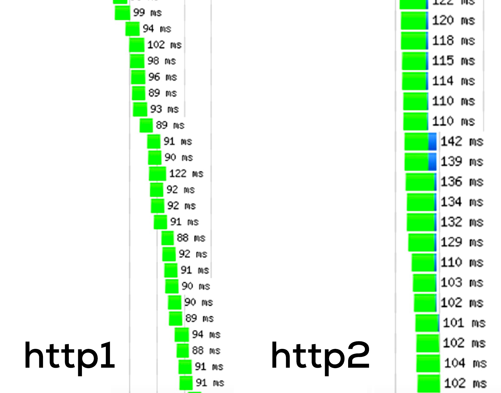

name: cover <img src="assets/img/peerigon.svg" style="width: 30%; margin-top: 7%; margin-bottom: -7%;"> # Frontend management – yesterday, today and tomorrow? .slide-author[ Johannes Ewald<br> .small[@jhnnns / johannes.ewald@peerigon.com]<br> <br> Richard Stromer<br> .small[@noxannet / hello@noxan.net]<br> ] --- layout: true class: center, middle .slide-header-left[ Frontend management – yesterday, today and tomorrow? ] .slide-header-right[ Web&Wine ] --- ## Johannes - Co-Founder Peerigon GmbH - Open Source developer - Teaching JavaScript at the University of Applied Sciences Augsburg --- <img src="assets/img/peerigon.svg" style="width: 50%; margin-bottom: 5%;" /> - Web Consulting Company - Web / Mobile Web / Hybrid / Backends - JavaScript / Node.js - Trainings - Software Development --- ## Richard - Freelance software developer - Focus on web applications<br>(Django, AngularJS and NodeJS) --- ## Agenda - How we used to manage our frontend: 3 examples of legacy web projects - Frontend management today - Optimizing page load time with Google PageSpeed - Advanced frontend optimization - Frontend management tomorrow? --- ## Disclaimer Biased view of JavaScript developers ahead.<br> Experience may vary depending on your background. --- ## How we used to manage our frontend 3 examples of legacy web projects --- ### roomieplanet.com --- - Server-side rendering with PHP and Smarty - Almost the same amount of code already on the client-side in JavaScript --- - 273 JS files (incl. external dependencies) - No dependency manager (aka `vendor` directory) - No real module system - [MooTools Packager](https://github.com/kamicane/packager) as build tool - Minified via [jsmin.php](https://github.com/rgrove/jsmin-php/) --- - A single `main.css` for all pages - No preprocessor - No minifier --- - No assets/file handling - No image compressor --- ### moonid.net --- - Classic Django website (Server side rendering) - Staticfiles (JS, CSS, Images...) managed by Django - Contains 23 JS files (rather snippets) - Building of SASS files via Makefile - Combination of CSS vendor files and SASS - JS files included directly via templates<br>Combination of jQuery plugins, vendor files, global and site depending snippets --- ### mybraintraining.com --- - Django compressor - Concatenate - Minify - Preprocessors - Integrated build process for SASS and CoffeeScript - Template as entry point with TemplateTags - Lacks of handling for vendor files - Just partial optimizations - Increasing percentage of JavaScript - Unified JavaScript for application, vendor dedicated --- ## Frontend management today --- <div style="position: absolute; left: 35%; top: 10%; width: 30%;"> <h3>Task Runners</h3> </div> <div style="position: absolute; left: 65%; top: 30%; width: 30%;"> <h3>CSS Processors</h3> </div> <div style="position: absolute; left: 55%; top: 60%; width: 30%;"> <h3>HTML Templates</h3> </div> <div style="position: absolute; left: 15%; top: 60%; width: 30%;"> <h3>JS Transpilers</h3> </div> <div style="position: absolute; left: 5%; top: 30%; width: 30%;"> <h3>Bundlers</h3> </div> --- ### Task Runners <span style="color: grey">*Examples: Grunt, Gulp*</span> --- ### Task Runners - Basically like Makefiles, but written in JS - Run tasks in a predefined order - Load custom tasks via NPM - Tasks can be applied on a set of files ("glob") - Can not understand the contents of a file - Do not have a notion of dependencies --- ### CSS Processors <span style="color: grey">*Examples: Sass, Less, PostCSS/Autoprefixer*</span> --- ### CSS Processors - Extend CSS with useful features like variables or selector nesting - Provide tools to avoid repetition --- ### HTML Templates <span style="color: grey">*Examples: Jade, Handlebars*</span> --- ### HTML Templates - Classical templating - Also avoid repetition - Are often shipped as two-way data binding in your client MV* framework --- ### JS Transpilers <span style="color: grey">*Examples: Babel, CoffeeScript*</span> --- ### JS Transpilers - Compile to JS - Provide custom syntax to solve specific problems more concisely - "Playground" for new ECMAScript features --- ### Bundlers <span style="color: grey">*Examples: Browserify, Webpack*</span> --- ### Bundlers - Put all JS files into one or multiple "bundles" (bigger JS files) - Figure out the *dependency tree* by scaning the *abstract syntax tree (AST)* for dependencies ---  <span style="color: grey">*Dependency tree*</span> --- `bundle.js` ```javascript ({ "./a.js": function(module, exports, require) { var b = require("./b.js"); var c = require("./c.js"); }, "./b.js": function(module, exports, require) { ... }, "./c.js": function(module, exports, require) { ... }}) ``` --- But websites are more than just JavaScript: - HTML - CSS - Fonts - Images What if we could treat them like regular modules? --- `Home.js` ```javascript var Home = View.extend({ template: require("./Home.html"), styles: require("./Home.css") }); ``` `Home.js` requires `Home.html` and `Home.css` --- `Home.html` ```html <div> <h1>Home</h1> <img src="assets/img/peerigon.svg"> </div> ``` `Home.html` requires `peerigon.svg` --- `Home.css` ```css @import "reset.css"; @font-face { font-family: 'Yanone Kaffeesatz'; src: url(assets/fonts/kaffeesatz.woff) format('opentype'); } #home { background-image: url(assets/img/peerigon.svg); } ``` `Home.css` requires `reset.css`, `kaffeesatz.woff` and `peerigon.svg` --- ### Bundlers - Provide the possibility to include other files like HTML and CSS via transforms/loaders --- How does that work? --- The `html-loader` for example reads the required HTML file and generates this: ```javascript module.exports = "<div><h1>Home</h1><img src=\"" + __webpack_require__(6) + "\"></div>"; ``` All text files (JS, HTML, CSS, Less, Sass, etc.) are included as JS string into the bundle --- ... and what about binary data like the referenced image? --- The `file-loader` copies the referenced image to the output folder and creates a JS module that returns the URL for that resource: ```javascript module.exports = __webpack_require__.p + "8f73676dc795be128a9bc94a2695e3be.svg" ``` --- ```javascript module.exports = "<div><h1>Home</h1><img src=\"" + __webpack_require__(6) + "\"></div>"; ``` ```javascript module.exports = __webpack_require__.p + "8f73676dc795be128a9bc94a2695e3be.svg" ``` --- Loaders/transforms can be chained in order to create powerful build chains ```javascript require("style-loader!css-loader!less-loader!./main.less"); ``` --- ```javascript require("style-loader!css-loader!less-loader!./main.less"); ``` - The `less-loader` compiles LESS to CSS and returns it -- - The `css-loader` traverses the CSS AST for referenced resources and generates a JS module which exports the CSS as string -- - The `style-loader` takes that string and appends it to the DOM as `style` tag --- Thus, bundlers are *intelligent* build tools that allow us to hook-in custom functionality based on ASTs --- ### So, why do we use all these tools? .flex-ltr[ <div></div> <div></div> <div></div> <div></div> <div></div> ] --- We want to ease development... -- ...while maintaining the best performance in production. --- ## Optimizing page load time with Google PageSpeed --- ### Why website speed optimization? - Loading takes too long - User may ask: Is the site down? - User may try another site meanwhile - In general bad user experience - User may not want to return - Not just initial load, also reload or navigation --- ### Loaded does not require complete load - Loading of website split in requests - Not all need to finish to start rendering - Render blocking content - Above the fold content - Different kinds of content: - HTML - JavaScript - Stylesheets - Images and other media --- ### What is Google PageSpeed Part of the “Make the Web Faster” - PageSpeed Insights: Analyze tool - PageSpeed Modules: Server modules for Apache / nginx - (Infrastructure) - Best practices, standards and resources --- ### PageSpeed Insights URL: m.youtube.com Strategy: Mobile Speed: 48 Usability: 100 CSS size | 151.1 kB HTML size | 141.37 kB Image size | 300.99 kB JavaScript size | 1.18 MB CSS resources | 2 Hosts | 9 JS resources | 6 Resources | 45 Static resources | 35 Other size | 39.48 kB Total size of request bytes sent | 5.05 kB Avoid landing page redirects | 33.5 Leverage browser caching | 14.11 Minify JavaScript | 0.35 Minimize render blocking resources | 64 Prioritize visible content | 8 <a href="https://developers.google.com/speed/pagespeed/insights/">https://developers.google.com/speed/pagespeed/insights/</a> --- ### Insights - Important rules - Compression - Caching - Minify and optimize size (HTML, JS, CSS, Images) - Avoid redirects on landing pages - Server response time - Prioritize visible content - Async JS and CSS loading (non render-blocking) --- ### Google chrome web developer tools  --- ### Speed optimization - Examples - Configure your server or use PageSpeed modules - Turn on gzip - Caching - ... - Concatenate and minify them all (can be done by server) - ... - Some more interesting examples <a href="http://www.noxan.net/webapp-playground/#/">http://www.noxan.net/webapp-playground/#/</a> --- ### Example: Server bundle or do it yourself ``` # Cache settings expires max; # Gzip settings gzip on; gzip_disable "msie6"; gzip_vary on; gzip_proxied any; gzip_comp_level 6; gzip_buffers 16 8k; # gzip_http_version 1.1; gzip_types text/plain text/css application/json application/javascript text/xml application/xml application/xml+rss text/javascript application/x-javascript image/svg+xml; ``` --- ### Example: Inline important JavaScript and CSS ```html <html> <head> <script type="text/javascript" src="small.js"></script> </head> <body> <div> Hello, world! </div> </body> </html> ``` ```javascript /* contents of a small JavaScript file */ ``` <a href="https://developers.google.com/speed/docs/insights/BlockingJS">developers.google.com/speed/docs/insights/BlockingJS</a> --- ### Example: Inline important JavaScript and ```html <html> <head> <script type="text/javascript"> /* contents of a small JavaScript file */ </script> </head> <body> <div> Hello, world! </div> </body> </html> ``` <a href="https://developers.google.com/speed/docs/insights/BlockingJS">developers.google.com/speed/docs/insights/BlockingJS</a> --- ### Example: Async JavaScript script.js loader ```javascript var $script = require('script.min.js'); $script([ 'https://ajax.googleapis.com/ajax/libs/angularjs/1.3.13/angular.min.js', ... 'app.js' ], function () { // loading done }); ``` --- ### Example: Async CSS load css with different media, e.g. `only x` ```javascript var $css = function (cssList) { var head = document.getElementsByTagName('head')[0]; cssList.forEach(function (cssHref) { var link = document.createElement('link'); link.rel = 'stylesheet'; link.href = cssHref; link.media = 'only x'; head.parentNode.insertBefore(link, head); setTimeout(function () { link.media = "all"; }); }); }; ``` --- ### Summary and limits of Google PageSpeed - 100 points is nice to show but is not all - does not adopt to your specific optimization goals - does not consider all aspects - effort in optimization is way higher than the benefit summary: a good tool to start with --- ### Futher reading - https://kinsta.com/learn/page-speed/ - https://developers.google.com/speed/docs/insights/ - https://developers.google.com/web/tools/starter-kit/ - https://www.clickz.com/clickz/column/2097323/website-loses-potential-conversions --- ## Frontend management tomorrow? --- These web features will change the way we build web apps: - HTTP2 - ES2015 modules and `System.import()` - Web Components --- ### HTTP2 <small style="position: absolute; left: 30%; right: 30%; bottom: 20%; text-align: center">Based on [Ilya Grigorik's talk at Velocity 2015](https://www.youtube.com/watch?v=yURLTwZ3ehk)</small> --- Problems with HTTP1: - <span style="color: red">Limited parallelism</span> - Parallelism is limited by number of connections --- Problems with HTTP1: - <span style="color: red">Head-of-line blocking</span>  --- Problems with HTTP1: - <span style="color: red">High protocol overhead</span> - Since requests should be stateless, all headers are re-sent again and again - Headers can not be compressed --- Features in HTTP2: - <span style="color: green">Parallelism by multiplexing</span> --- HTTP2 is a binary protocol  --- Frames can be interleaved on a single TCP connection --- Yields to more efficient use of bandwidth  <small>[Source: HTTP/2 101 Chrome Dev Summit 2015](https://www.youtube.com/watch?v=r5oT_2ndjms)</small> --- Features in HTTP2: - <span style="color: green">Parallelism by multiplexing</span> - <span style="color: green">Response prioritization</span> - <span style="color: green">Header compression</span> -- - <span style="color: green">Server push</span> --- Server push --- Server push is equivalent to "inlining", except... -- ...it delivers granular resources which can be cached and prioritized individually. --- What do we need to provide server push? --- A dependency tree for each file: <span style="color: grey">*index.html*</span> ```javascript { "/css/app.css": { "type": "style", "weight": 1 }, "/js/app.js": { "type": "script", "weight": 1 }, "/elements.html": { "type": "document", "weight": 1 } } ``` <small>[Google's Push Manifest Proposal](https://github.com/GoogleChrome/http2-push-manifest)</small> --- This can be accomplished by... -- - traffic analysis *("soon after delivering `index.html`, the same client also asked for `image.jpg`")* -- - tools like bundlers which figure out the dependency tree --- ### ES2015 modules and `System.import()` <small style="position: absolute; left: 30%; right: 30%; bottom: 20%; text-align: center"> Based on [Axel Rauschmayer's](http://www.2ality.com/2014/09/es6-modules-final.html)<br> and [Jason Orendorff's](https://hacks.mozilla.org/2015/08/es6-in-depth-modules/) blog post </small> --- What are ES2015 modules? --- <span style="color: grey">*a.js*</span> ```javascript export default 42; ``` <span style="color: grey">*main.js*</span> ```javascript import magicNumber from "./a.js"; ``` --- Looks almost like CommonJS, right? <span style="color: grey">*a.js*</span> ```javascript module.exports = 42; ``` <span style="color: grey">*main.js*</span> ```javascript let magicNumber = require("./a.js"); ``` --- Nope. --- CommonJS modules resolve exports/imports... - on runtime - as copy of the original value --- ES2015 modules resolve exports/imports... - on compilation - as live value --- On runtime vs. on compilation .flex-ltr[ ```javascript let magicNumber; if (Math.random() < 0.5) { magicNumber = require("./a.js"); } else { magicNumber = require("./b.js"); } ``` ```javascript if (Math.random() < 0.5) { import magicNumber from "./a.js"; } else { import magicNumber from "./b.js"; } // throws a SyntaxError ``` ] --- Copied value vs. live value <span style="color: grey">*a.js*</span> .flex-ltr[ ```javascript exports.value = 42; exports.incr = function () { exports.value++; } ``` ```javascript export let value = 42; export function incr() { value++; } ``` ] <span style="color: grey">*main.js*</span> .flex-ltr[ ```javascript let value = require("./a").value; let incr = require("./a").incr; incr(); console.log(value); // 42 ``` ```javascript import { value, incr } from "./a.js"; incr(); console.log(value); // 43 ``` ] --- ES2015 modules export *one-way bindings*,<br> i.e. *immutable live connections* to values. --- Why is that important for frontend management? --- Since imports/exports are resolved on compilation, all required modules must be registered *before* code is actually executed. --- No AMD?<br> No on-demand loading?<br> --- `System.import()` all the things! <img src="assets/img/all-the-things.png" style="max-width: 100%;"> --- ```javascript System.import("some-module") .then((someModule) => { ... }) .catch(error => { ... }); ``` --- That looks almost like webpack's `require.ensure()` ```javascript require.ensure(["some-module"], (require) => { let someModule = require("some-module"); // ... }); ``` --- Starting with webpack 2, `System.import()` creates a new chunk just like `require.ensure()`. --- **But** Things aren't finalized yet. --- `System.import()` is very platform specific and many things need to be considered. -- That's why it has been excluded from ES2015 and will be specified as separate ["Loader Standard"](https://github.com/whatwg/loader) --- At the same time, a draft for a [`<module>`](https://github.com/dherman/module-tag)-tag has been created. --- ```html <module> import app from "myapp"; </module> ``` *same as* ```html <script> System.import("myapp").then(function(app) { }); </script> ``` --- ### And what about Web Components? Aren't they supposed to solve similar problems? <small style="position: absolute; left: 30%; right: 30%; bottom: 20%; text-align: center">Based on [Axel Rauschmayer's blog post](http://www.2ality.com/2015/08/web-component-status.html)</small> --- Yes and no. --- #### Shadow DOM Encapsulates DOM nodes into sub trees that are unreachable with CSS selectors -- <span style="color: green">*Solves a specific problem with selectors. A standard is on the way.*</span> --- #### HTML templates Declare a portion of reusable markup that is parsed but not rendered until cloned. -- <span style="color: green">*Not very complex and [already broadly supported](http://caniuse.com/#feat=template).*</span> --- #### Custom elements An API for registering your own implementations for HTML elements. -- <span style="color: darkorange">*The API is still in flux and details about the activation of custom elements are still unclear.*</span> --- #### HTML imports Import other HTML documents into the current one. That way, HTML documents become bundles of HTML, CSS and JavaScript.<br> <br> HTML imports are required to actually distribute custom elements and all of their dependencies. -- <span style="color: red">*Too much overlap with ES2015 module loading. Some argue that further work on HTML imports should wait until ES2015 module loading is finished.*</span> --- ## Conclusion --- Our tool set has become very complex over the recent years... .flex-ltr[ <div></div> <div></div> <div></div> <div></div> <div></div> ] -- <br> ...not to mention all the frameworks that bring their own way of doing things: --- These tools, however, ease development...<br> ...while allowing us to improve performance in production. --- **As a rule of thumb** - Do not use these tools unless you actually need them -- - Strive for the least abstraction from the original source -- - Plugin-driven tools will serve you better than monolithic all-rounders -- - AST-based tools are better than DSLs --- ### What about these upcoming web features? --- **HTTP2** invalidates some of our current performance best-practices (spriting, sharding, inlining),<br> while others still apply (compressing, on-demand loading) --- **ES2015 modules** are ready to use with transpilers, but native support will still take some time. --- **Web components** provide some useful features like Shadow DOM. HTML imports, however, still remain vague. --- ## Thank you Johannes Ewald<br> @jhnnns<br> johannes.ewald@peerigon.com<br> <br> Richard Stromer<br> @noxannet<br> hello@noxan.net